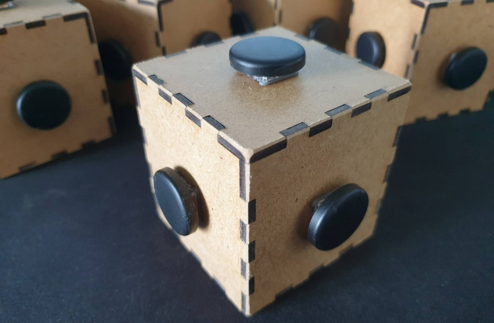
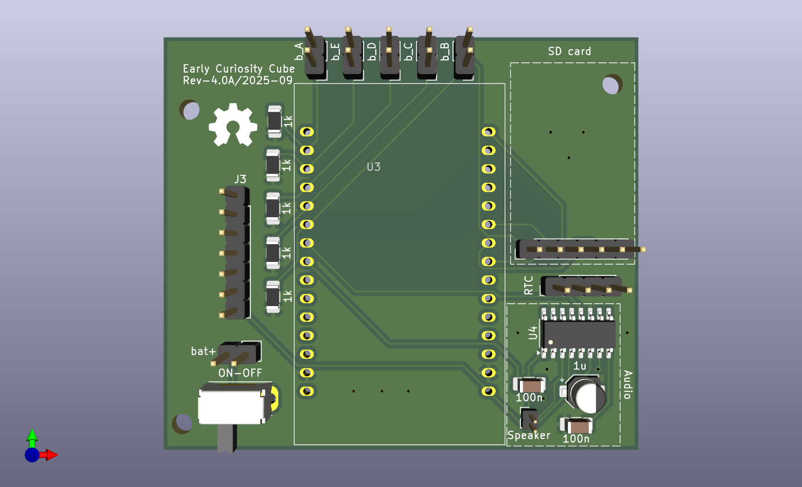
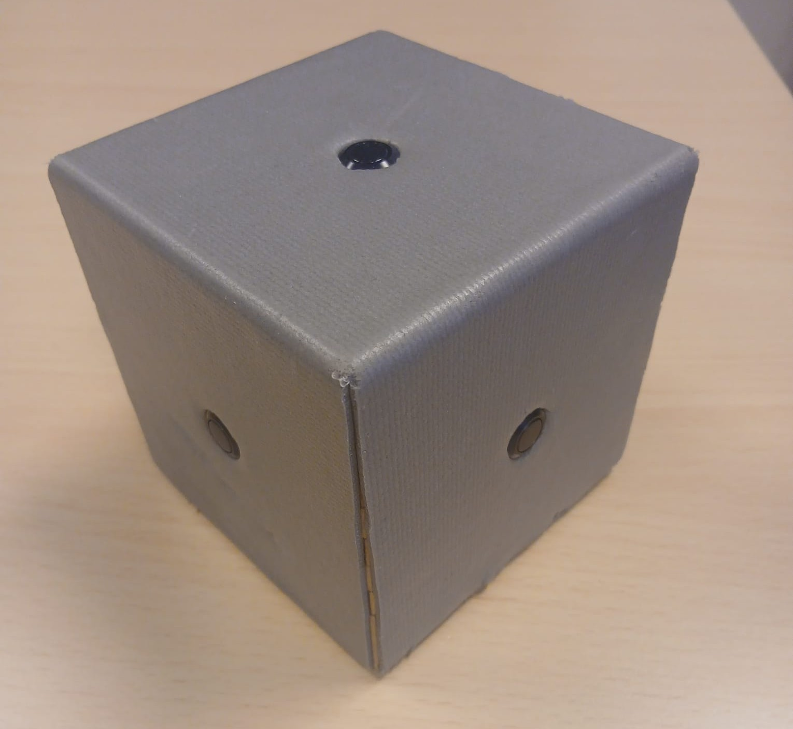
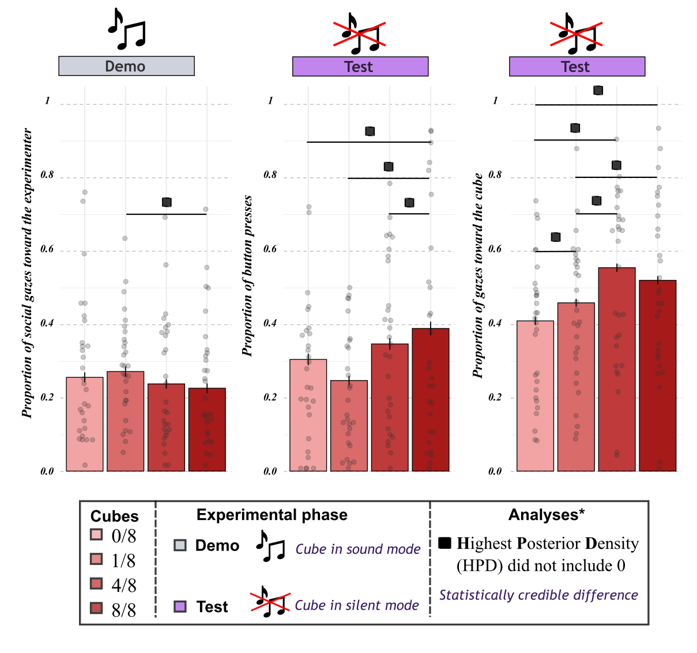
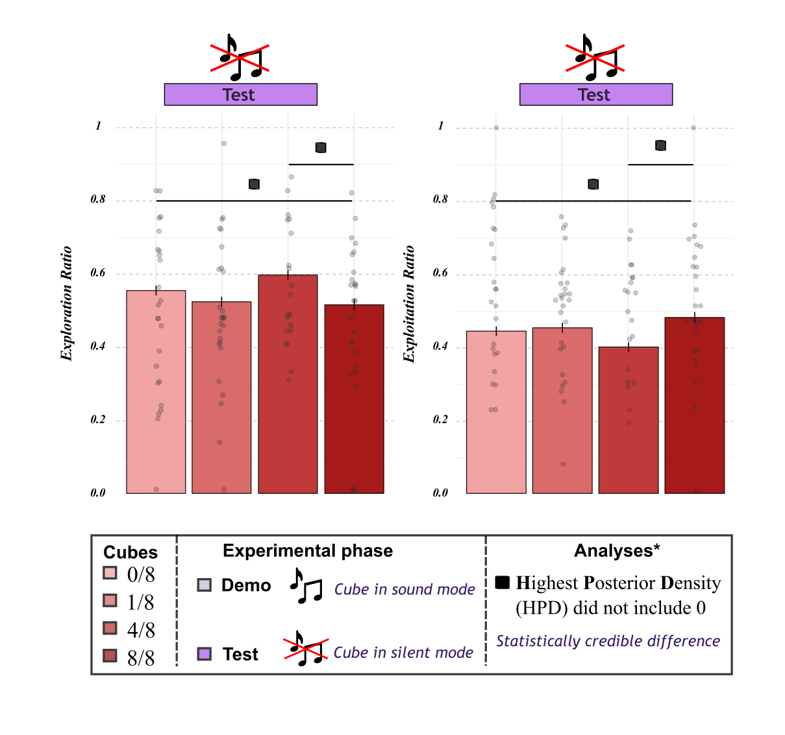

Project Overview
The CUBE-SD (Curiosity, Uncertainty, and their Biological & Emotional mechanisms – Investigating how uncertainty drives curiosity across animal Species and human Development) project investigates how uncertainty shapes curiosity in human infants and non-human primates, and how this process supports exploration and learning.
The CUBE-SD research focuses on the relationship between uncertainty, surprise, arousal, and curiosity in infants. Building on the work of Kidd et al. (2012, 2014), who demonstrated in 8-month-old infants that they are more attentive to sequences that are neither too predictable nor too uncertain—a phenomenon the authors call the Goldilocks effect—this research program is embedded within the CUBE-SD project.
In this project, we combine behavioral measures (both hand-coded and automated procedures; see iFACE section for detailed about the automated procedure) to disentangle the relationship between uncertainty and curiosity in infants, with a particular focus on the emotion of surprise. Physiological data are collected using a wearable device (see section below). The project also includes a second work package (WP2), which adopts a comparative approach across human and non-human primate species to trace the phylogeny of the Goldilocks effect. Finally, a third work package (WP3) will use a computational approach to test a theoretical model based on data from the two previous work packages.
See Romain di Stasi's personal website for an overview of his research projects.
You can also visit the Adélaïde de Heering laboratory website for an overview of all LulLaby research projects.
Research Structure
The CUBE-SD project is structured into three main research axes, for which I have secured funding for the first Work package (WP1) and am currently seeking funding for the other two.
Work package 1: Infant Studies (Funded) — WP1
Funded by the Wallonie-Bruxelles International (WBI) Excellence Fellowship (Dr. Romain di Stasi) and the Consolidate ARC (Prof. Adélaïde de Heering), this work package investigates how uncertainty shapes curiosity in infants aged 18–24 months. Building on the Goldilocks effect described by Kidd et al., it examines whether infants are more curious when faced with intermediate levels of uncertainty, not only during passive exposure to stimulation but also in situations where they actively explore and manipulate their environment. To better understand the mechanisms underlying this relationship, the project adopts a multidimensional approach combining behavioral, emotional, and physiological data. Curiosity is assessed through behavioral measures such as infants' button-pressing activity and exploration strategies, while emotional responses are examined through facial expressions, including surprise, using iFACE (Infant Facial Analysis for the Classification of Emotion), an automated video-analysis tool currently being developed in Python. Physiological responses are also recorded using the Empatica EmbracePlus bracelet, worn on the infant's ankle, to measure heart rate variability (HRV) and electrodermal activity (EDA) as indices of attentional engagement and arousal. Together, these measures make it possible to examine how uncertainty, surprise, attention, and arousal jointly shape curiosity in early development. The work package is organized into two complementary studies.
Methodology
In this experiment, the infant is presented with four cubes. Each cube has a button on every face except one, allowing it to rest stably on the table.
When a button is pressed, each cube produces a sound with a distinct probability: one always makes a sound, another produces a sound half of the time, a third only once in eight presses, and the last cube never makes a sound.
The experiment proceeds as follows: an experimenter stands in front of the infant and demonstrates how to use the cube by pressing the top button eight times before handing the now-muted cube to the infant. The experimenter then leaves the room and allows the infant to explore the cube for one minute.
The experimenter then returns with another cube chosen at random, repeats the demonstration, hands the now-muted cube to the infant, and leaves the room again. This procedure is repeated until all four cubes have been presented.
These differences in probability make it possible to manipulate infants’ uncertainty and investigate how it influences their exploration and exploitation behaviour, thereby indexing their curiosity.
.png)

Photo of the cube used in studies involving infants (WP1)
Work package 2: Comparative Studies with Non-Human Primates — WP2
This Work package aims to assess whether the Goldilocks effect is specific to humans or constitutes a more general adaptation observable in other non-human primates. Partnerships with several European zoos are being established to test multiple non-human primate species and trace the phylogeny of the Goldilocks effect.

Photo of the simulated PCB for the non-human primate (WP2)

Photo of the prototype cube for non-human primates (WP2)
Technical Resources: All cube source code, hardware designs, and technical documentation are available in the cube-neuro repository.
Work package 3: Theoretical Modeling and Artificial Intelligence — WP3
This Work package will test a theoretical model of curiosity developed from the results of Axes 1 and 2. The model will first be formalized using structural equation modeling (SEM), then simulated on an artificial intelligence system using reinforcement learning methods.
Key Methodologies
- Behavioral Studies
- Physiological Measures (EDA, HRV)
- Automatic Facial Expression Detection
- Comparative Approach
- Bayesian Modeling
- Artificial Intelligence
- Reinforcement Learning
The project employs wearable devices (Empatica EmbracePlus) to measure electrodermal activity (EDA) as an index of arousal and heart rate variability (HRV) as an index of attention. An artificial intelligence tool developed with Dr. Fabien Cerrotti, iFACE (Infant Facial Analysis for the Classification of Emotion), enables automatic detection of surprise facial expressions.
Collaborations & Funding
Funding
Work package 1 is funded by a Wallonie-Bruxelles International (WBI) excellence fellowship (Dr. Romain di Stasi) and the Consolidate ARC (Prof. Adélaïde de Heering). Several European funding applications have been submitted to develop this research program.
Research Team
This project is conducted in collaboration with:
Zoo Partnerships
Partnerships may be established with several European zoos, including Pairi Daiza (Brugelette), for which a cube prototype designed to withstand the strength of non-human primates has already been developed.
Meet the Team at the Laboratoire LulLABy, Center for Research in Cognition & Neuroscience (CRCN), Université libre de Bruxelles (ULB)
Preliminary Results
These preliminary analyses include 42 infants aged 18–24 months. Infants observed demonstrations with four sound probabilities (0/8, 1/8, 4/8, and 8/8). During the subsequent test, all cubes remained silent.
Measures of curiosity: proportion of button presses relative to cube-exposure duration (hand coded, inter-rater agreement: 87.13%), proportion of gaze toward the cube (hand coded, inter-rater agreement: 90.91%), and automated measures of exploration and exploitation derived from button-press sequences.
Overall manual exploration. During the test, the proportion of button presses was highest for the 8/8 cube. This cube had produced a sound after every demonstration press but became silent when infants interacted with it, creating the strongest violation of expectation. This pattern suggests that unexpected silence following a consistently sounding demonstration may increase infants’ overall manual engagement with an object.
Visual exploration. Infants spent a greater proportion of time looking at the 4/8 cube than at the other cubes during the test. This finding is consistent with a Goldilocks effect, with greater visual attention following intermediate uncertainty.
Exploration and exploitation strategies. Button-press sequences recorded automatically by the cubes provided a more detailed measure of manual behaviour. Switching between buttons was coded as exploration, whereas repeating presses on the same button was coded as exploitation. Exploration was highest and exploitation lowest for the 4/8 cube, also consistent with a Goldilocks effect.
Measure of surprise: social gaze toward the experimenter (hand coded, inter-rater agreement: 85.58%).
During the demonstration, social gaze was highest for the 1/8 cube. This pattern may reflect surprise when a mostly silent cube unexpectedly produced a sound. Planned time-series analyses will examine whether these gazes occurred around the unexpected sound at the end of the demonstration.
What do these findings suggest? Violations of expectation and uncertainty may shape different aspects of exploration. The strongest violation of expectation was associated with the greatest overall manual engagement, whereas intermediate uncertainty was associated with greater visual attention and more switching between buttons. These behavioural measures remain indirect indicators of curiosity and surprise and may partly reflect motor or task-related factors.
Next steps. Heart-rate variability analyses and the development of i-FACE, an algorithm for detecting infants’ facial expressions of surprise, will help investigate the mechanisms linking uncertainty, surprise, and curiosity.


Posters Presentations
di Stasi, R., Kabdebon, C., Delhaye, Q., & de Heering, A. (2026, July). XXV International Conference on Infant Studies (ICIS) 2026 Infancy in Context, Jul 2026, Panama City, Panama.
di Stasi, R., Kabdebon, C., Delhaye, Q., & de Heering, A. (2026, January). The 16th annual BCCCD Conference - BCCCD26, Budapest, Hungary.
di Stasi, R., Kabdebon, C., Delhaye, Q., & de Heering, A. (2025, November). NeuroCog conference, Brussels, Belgium.
di Stasi, R., Kabdebon, C., Delhaye, Q., & de Heering, A. (2025, May). Belgian Association for Psychological Sciences, Brussels, Belgium.